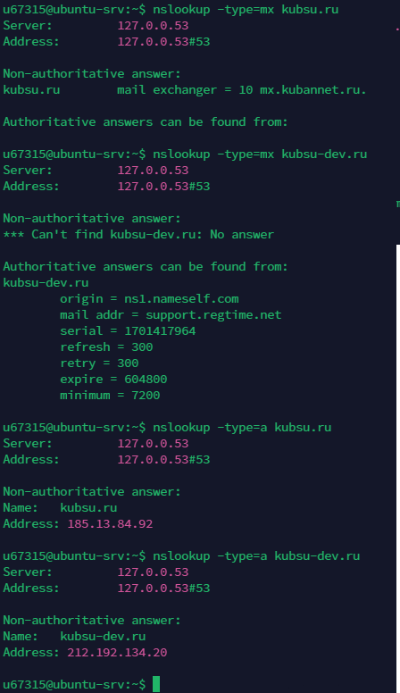
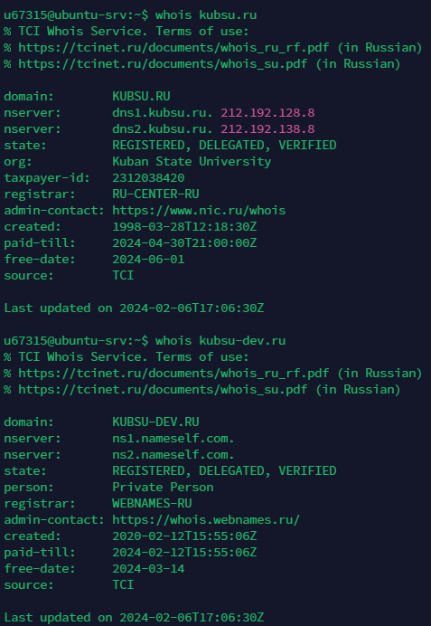

Задание 1
2) С помощью команды ping на учебном сервере узнать IP-адрес веб-сервера
kubsu.ru, сделать скриншот вызова команды ping, добавить скриншот в git-
репозитарий задания.
 3) С помощью команды nslookup узнать A-записи и MX-записи домена kubsu.ru и
kubsu-dev.ru, добавить скриншоты в git-репозитарий задания.
3) С помощью команды nslookup узнать A-записи и MX-записи домена kubsu.ru и
kubsu-dev.ru, добавить скриншоты в git-репозитарий задания.

4) С помощью команды whois узнать дату регистрации домена kubsu.ru и kubsu-
dev.ru, добавить скриншоты в git-репозитарий задания.

5) Сделать веб-страницу index.html со скриншотами, добавить ее в git, с помощью
SSH склонировать репозитарий со скриншотами и страницей в каталог www.
С помощью программы FileZilla или любого другого клиента SFTP соединиться с
учебным сервером с вашим логином и паролем по протоколу SFTP и скопировать на
локальный компьютер файлы задания из каталога www